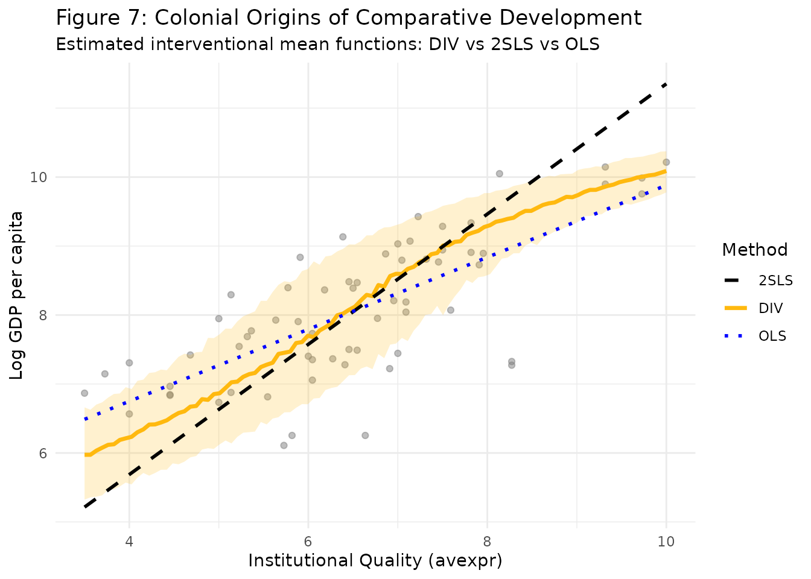

Section 6.1: Colonial Origins of Comparative Development
Source:vignettes/Section6_1.Rmd
Section6_1.Rmd
library(divR)
library(ggplot2)
library(dplyr)
#>
#> Attaching package: 'dplyr'
#> The following objects are masked from 'package:stats':
#>
#> filter, lag
#> The following objects are masked from 'package:base':
#>
#> intersect, setdiff, setequal, union
library(httr)
library(readstata13)Introduction
In Section 6.1 of the paper, we apply the DIV method to the “Colonial Origins of Comparative Development” dataset from Acemoglu et al. (2001). This study explores the causal effect of institutional quality on economic performance, using historical settler mortality as an instrumental variable.
Data Loading and Preparation
We use the “base sample” of 64 countries as in the original study.
# Load data from the provided URL
url <- "https://www.dropbox.com/scl/fi/3yuv9j514zuajzjfluoc1/maketable4.zip?rlkey=pq9l7bxktw1iqxe6fmoh26g79&e=1&dl=1"
temp_file <- tempfile(fileext = ".zip")
GET(url, write_disk(temp_file, overwrite = TRUE))
#> Response [https://uc384e3630f3b81f6bd867276639.dl.dropboxusercontent.com/cd/0/get/DAz8CIDmvPoG5bsYbh9186e-n_4TOsScN4Que3BxvpKVP7oWfpMjsSPdZErVaZIl9uABVcPZOf8jHyGDwhtnrf8G_pDIZtn1mHrnGSgKZzz03qP_11ouDgk1cYvVbxKQtKpU0nuV06u0KsKJL8e0HGGH/file?dl=1]
#> Date: 2026-05-19 16:25
#> Status: 200
#> Content-Type: application/binary
#> Size: 4.77 kB
#> <ON DISK> /tmp/RtmphTTUtw/file1d67510e69c2.zip
temp_dir <- tempdir()
unzip(temp_file, exdir = temp_dir)
dta_file <- list.files(temp_dir, pattern = "\\.dta$", full.names = TRUE)
df <- read.dta13(dta_file)
df <- df %>% filter(baseco == 1)
# Variables
# X: Average protection against expropriation risk (Institutional Quality)
# Z: Log European settler mortality
# Y: Log GDP per capita in 1995
X <- df$avexpr
Z <- df$logem4
Y <- df$logpgp95Figure 7: Estimated Interventional Mean Function
We fit the DIV model to estimate the causal relationship. In Figure 7 of the paper, we show that despite DIV’s ability to capture complex nonlinearities, it recovers an approximately linear relationship in this dataset, which is consistent with the findings of Acemoglu et al. (2001).
Comparison with OLS and 2SLS
We compare the DIV results with standard OLS and 2SLS (Two-Stage Least Squares).
avexpr_seq <- matrix(seq(min(X), max(X), length.out = 100), ncol = 1)
# DIV predictions
mean_pred_div <- predict(model, Xtest = avexpr_seq, type = "mean", nsample = 1000)
q_pred_div <- predict(model, Xtest = avexpr_seq, type = "quantile",
quantiles = c(0.1, 0.9), nsample = 1000)
# OLS
ols_mod <- lm(logpgp95 ~ avexpr, data = df)
ols_pred <- predict(ols_mod, newdata = data.frame(avexpr = as.vector(avexpr_seq)))
# 2SLS (Manual implementation)
# Stage 1: Regress X on Z
stage1 <- lm(avexpr ~ logem4, data = df)
df$avexpr_hat <- predict(stage1)
# Stage 2: Regress Y on predicted X
stage2 <- lm(logpgp95 ~ avexpr_hat, data = df)
tsls_pred <- coef(stage2)[1] + coef(stage2)[2] * as.vector(avexpr_seq)
plot_df <- data.frame(
avexpr = as.vector(avexpr_seq),
DIV = as.vector(mean_pred_div),
DIV_lower = q_pred_div[, 1],
DIV_upper = q_pred_div[, 2],
OLS = ols_pred,
TSLS = tsls_pred
)
ggplot() +
geom_point(data = df, aes(x = avexpr, y = logpgp95), alpha = 0.5, color = "grey50") +
geom_ribbon(data = plot_df, aes(x = avexpr, ymin = DIV_lower, ymax = DIV_upper),
fill = "darkgoldenrod1", alpha = 0.2) +
geom_line(data = plot_df, aes(x = avexpr, y = DIV, color = "DIV"), linewidth = 1.2) +
geom_line(data = plot_df, aes(x = avexpr, y = TSLS, color = "2SLS"), linetype = "dashed", linewidth = 1) +
geom_line(data = plot_df, aes(x = avexpr, y = OLS, color = "OLS"), linetype = "dotted", linewidth = 1) +
scale_color_manual(values = c("DIV" = "darkgoldenrod1", "2SLS" = "black", "OLS" = "blue")) +
labs(title = "Figure 7: Colonial Origins of Comparative Development",
subtitle = "Estimated interventional mean functions: DIV vs 2SLS vs OLS",
x = "Institutional Quality (avexpr)",
y = "Log GDP per capita",
color = "Method") +
theme_minimal()
Conclusion
As discussed in Section 6.1, DIV’s estimated effect of institutions on GDP remains nearly linear, with a slope closely matching that of the 2SLS estimate. This result indicates that even though DIV has the capacity to model complex, nonlinear relationships, it can still yield an approximately linear solution on real-world data when appropriate. The shaded band shows the 10th–90th percentile range from the interventional distribution, providing uncertainty information that 2SLS cannot offer.